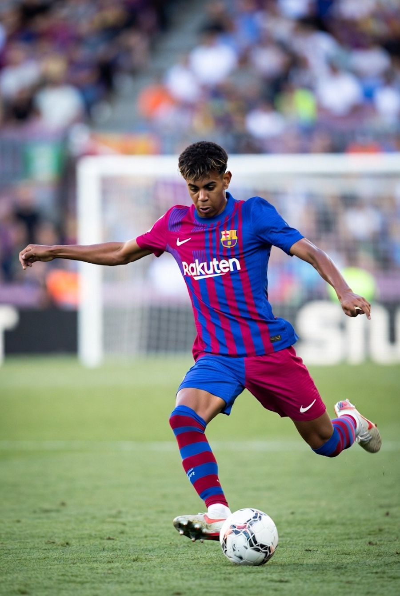

My Interests
Technology & Cybersecurity

My interest in cybersecurity started when I became curious about how systems can be both powerful and vulnerable at the same time. Over time, that curiosity turned into discipline. I enjoy learning how networks communicate, how attacks happen, and how professionals defend systems against them. For me, cybersecurity is not just a career path — it is a skill set that requires constant growth.
Fitness & Mental Discipline

Fitness plays a major role in my life outside of academics. Training consistently has helped me develop discipline and mental resilience, which directly carries over into my studies and professional goals. The structure I build in the gym translates into structure in my daily routine.
Soccer & Competitive Spirit

Soccer reinforces teamwork and strategic thinking.
Anime & Storytelling

Anime explores complex moral themes and character development.
Travel & Cultural Growth

Exposure to diverse cultures strengthens adaptability and worldview.